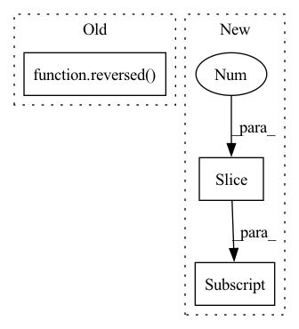

Pattern ID :9240
Before Change
self.mid_after = blocks(mid_dim, mid_dim)
self.mid_upsample = Upsample(mid_dim, dims[-2])
for ind, ((dim_in, dim_out), nested_unet_depth) in enumerate(zip(reversed(in_out[:-1]), reversed( nested_unet_depths[:-1]) )):
is_last = ind >= (num_resolutions - 1)
self.ups.append(nn.ModuleList([After Change
num_blocks_per_stage
]
up_stage_parameters = [reversed(params[:-1] ) for params in down_stage_parameters]
// downs
In pattern: SUPERPATTERN
Frequency: 4
Non-data size: 3
Instances Fragment ID: 33319544
Project Name: lucidrains/x-unet
Commit Name: b5ef4956e71ab6cf4fee8cc09f4680bc64ed4555
Time: 2022-07-25
Author: lucidrains@gmail.com
File Name: x_unet/x_unet.py
M Class Name: XUnet
N Class Name: XUnet
M Method Name: __init__(12)
N Method Name: __init__(11)
M Parent Class: nn.Module
N Parent Class: nn.Module
M File Name: x_unet/x_unet.py
N File Name: x_unet/x_unet.py
M Start Line: 230
M End Line: 270
N Start Line: 216
N End Line: 293
Before Change
view2 = patches.sort_by_similarity(query_id, reverse=True)
self.assertEqual(
view1.values("id"), list(reversed( view2.values("id")) )
)
view3 = patches.sort_by_similarity(query_id, k=4)After Change
view5 = view4.limit(2)
values5 = view5.values("id")
self.assertListEqual(values5, values1[:2] )
view5.reload()
values5 = view5.values("id") Fragment ID: 33319545
Project Name: voxel51/fiftyone
Commit Name: 0764c54f5ac4a28743f1b065ec3c21e0005fbf1e
Time: 2023-04-08
Author: brimoor@umich.edu
File Name: tests/unittests/similarity_tests.py
M Class Name: SimilarityTests
N Class Name: SimilarityTests
M Method Name: test_object_similarity(1)
N Method Name: test_object_similarity(1)
M Parent Class: unittest.TestCase
N Parent Class: unittest.TestCase
M File Name: tests/unittests/similarity_tests.py
N File Name: tests/unittests/similarity_tests.py
M Start Line: 165
M End Line: 178
N Start Line: 179
N End Line: 204
Before Change
view2 = dataset.sort_by_similarity(query_id, reverse=True)
self.assertEqual(
view1.values("id"), list(reversed( view2.values("id")) )
)
view3 = dataset.sort_by_similarity(query_id, k=4)After Change
view5 = view4.limit(2)
values5 = view5.values("id")
self.assertListEqual(values5, values1[:2] )
view5.reload()
values5 = view5.values("id") Fragment ID: 33319547
Project Name: voxel51/fiftyone
Commit Name: 0764c54f5ac4a28743f1b065ec3c21e0005fbf1e
Time: 2023-04-08
Author: brimoor@umich.edu
File Name: tests/unittests/similarity_tests.py
M Class Name: SimilarityTests
N Class Name: SimilarityTests
M Method Name: test_image_similarity(1)
N Method Name: test_image_similarity(1)
M Parent Class: unittest.TestCase
N Parent Class: unittest.TestCase
M File Name: tests/unittests/similarity_tests.py
N File Name: tests/unittests/similarity_tests.py
M Start Line: 101
M End Line: 114
N Start Line: 102
N End Line: 127
Before Change
x = self.pool(x)
x = self.bottleneck(x)
skip_connections = reversed( skip_connections)
for index in range(0, len(self.ups), 2):
x = self.ups[index](x)
skip_connection = skip_connections[index // 2]
After Change
x = self.pool(x)
x = self.bottleneck(x)
skip_connections = skip_connections[::-1]
for index in range(0, len(self.ups), 2):
x = self.ups[index](x)
skip_connection = skip_connections[index // 2]
Fragment ID: 33319540
Project Name: charbel199/machine-learning-concepts
Commit Name: f971c547f572876c8c3ca492762f4d494f6bfa6c
Time: 2022-05-24
Author: charbel-boumaroun@outlook.com
File Name: models/UNet/UNet.py
M Class Name: UNET
N Class Name: UNET
M Method Name: forward(2)
N Method Name: forward(2)
M Parent Class: nn.Module
N Parent Class: nn.Module
M File Name: models/UNet/UNet.py
N File Name: models/UNet/UNet.py
M Start Line: 43
M End Line: 50
N Start Line: 46
N End Line: 53